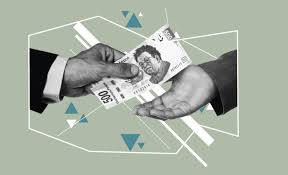

 Corrupción es la acción y efecto de corromper, es decir, es el proceso de quebrar deliberadamente el orden del sistema, tanto ética como funcionalmente, para beneficio personal. Además de que el corrupto comete una acción ilegal, también presiona u obliga a otros a cometer tales actos.
La corrupción suele estar relacionada en el imaginario popular con el mundo de la política y el enriquecimiento ilícito, es decir, con el dinero, pero no solo con eso. La corrupción aplica a muchas instancias. Por ello, existe corrupción política, corrupción económica, corrupción sexual, etc. Esto se debe a que los dos grandes factores de intercambio que movilizan la corrupción suelen ser el dinero, el poder y el sexo.
Soborno, Desvío de recursos, Enriquecimiento ilícito u oculto, Abuso de poder, Abuso de funciones, Tráfico de influencias: valerse de las relaciones personales, estrechas o no, para obtener prebendas. Colusión, Conspiración para cometer delitos de corrupción, Obstrucción de la justicia, Nepotismo, Uso ilegal de información confidencial o falsas.
Comprar mercancía pirata; Robar servicios públicos; Usar la caja de ahorros o cesantías en asuntos diferentes a los estipulados; Evadir impuestos, etc.